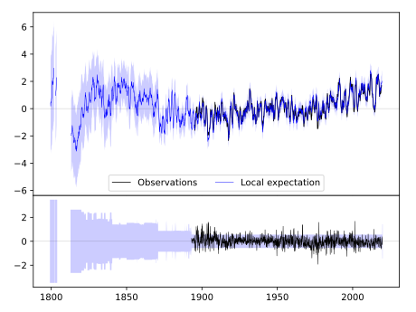
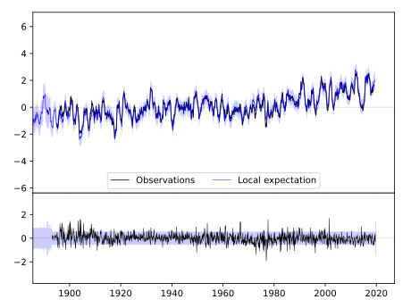
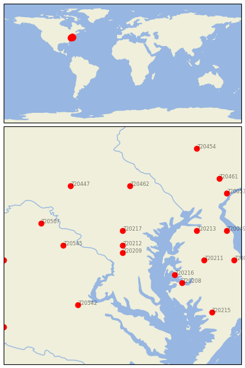

LAUREL 3 W [USA]


| Neighbour | Name | Country | Distance | Lon/Lat | Years |
|---|
| 720212 | LAUREL 3 W | USA | 0 | -76.9, 39.1 | 1893-2019 |
| 720209 | BELTSVILLE | USA | 11 | -76.9, 39.0 | 1893-2019 |
| 720217 | WOODSTOCK | USA | 22 | -76.9, 39.3 | 1870-2019 |
| 720545 | LINCOLN | USA | 69 | -77.7, 39.1 | 1893-2019 |
| 720216 | ROYAL OAK 2 SSW | USA | 75 | -76.2, 38.7 | 1891-2019 |
| 720208 | CAMBRIDGE WATER TRMT | USA | 88 | -76.1, 38.6 | 1893-2019 |
| 720213 | MILLINGTON 1 SE | USA | 89 | -75.9, 39.3 | 1893-2019 |
| 720462 | YORK 3 SSW PUMP | USA | 89 | -76.8, 39.9 | 1840-2019 |
| 720211 | DENTON 2 E | USA | 97 | -75.8, 38.9 | 1892-2019 |
| 720567 | MARTINSBURG E WV RGN | USA | 100 | -78.0, 39.4 | 1891-2019 |
| 720542 | FREDERICKSBURG NP | USA | 103 | -77.5, 38.3 | 1893-2019 |
| 720447 | CHAMBERSBURG 1 ESE | USA | 107 | -77.6, 39.9 | 1858-2019 |
| 720049 | DOVER | USA | 122 | -75.5, 39.3 | 1870-2019 |
| 720051 | MILFORD 2 SE | USA | 131 | -75.4, 38.9 | 1893-2019 |
| 720548 | WOODSTOCK 2 NE | USA | 140 | -78.5, 38.9 | 1893-2019 |
| 720053 | WILMINGTON PORTER RE | USA | 143 | -75.5, 39.8 | 1887-2019 |
| 720215 | PRINCESS ANNE | USA | 144 | -75.7, 38.2 | 1823-2019 |
| 720461 | WEST CHESTER 2 NW | USA | 149 | -75.6, 40.0 | 1843-2019 |
| 720454 | READING 4 NNW | USA | 167 | -75.9, 40.4 | 1888-2019 |
| 720539 | CHARLOTTESVILLE 2W | USA | 185 | -78.5, 38.0 | 1837-2019 |